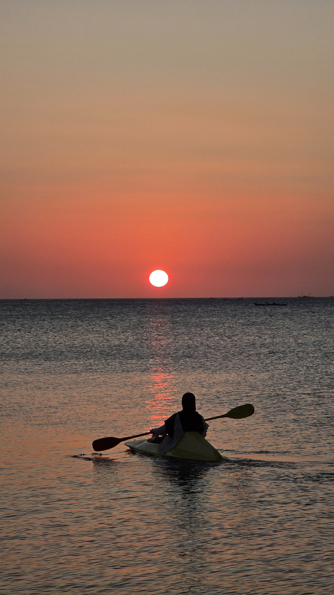
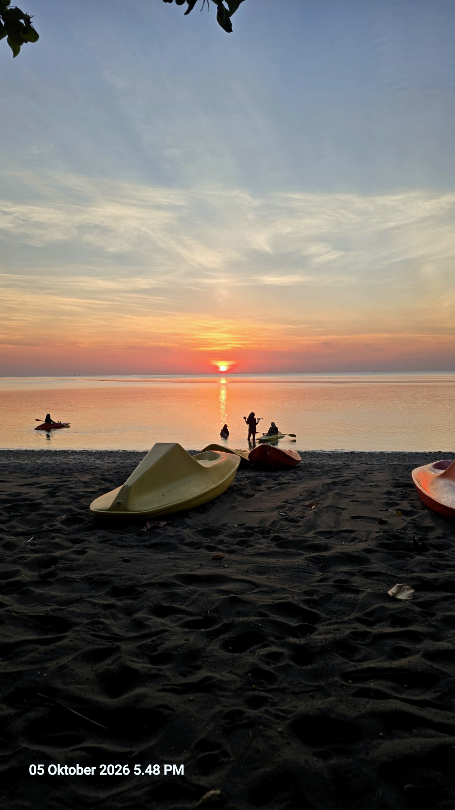
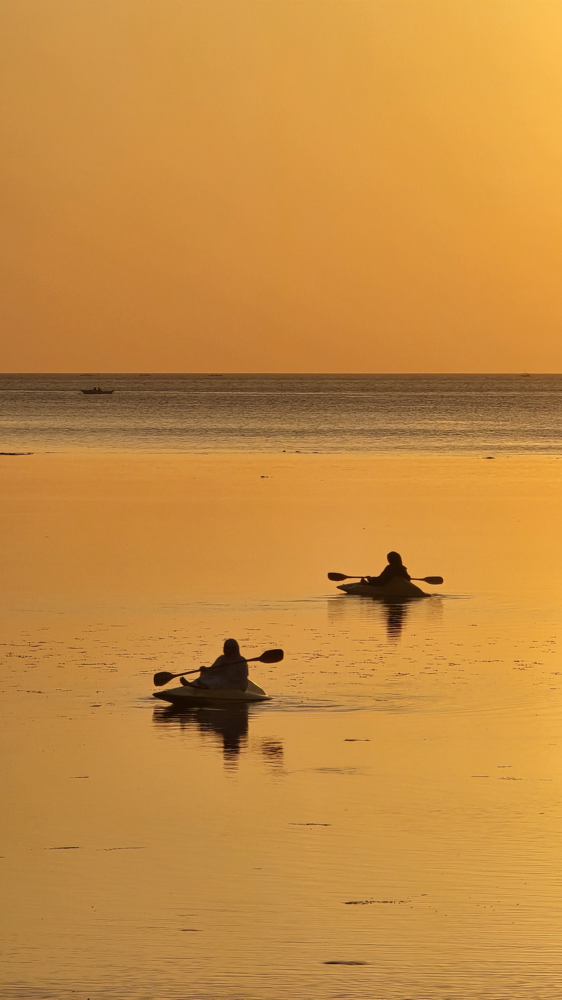

01 / 20
Tips kano & kayak saat senja
Mendayung
menyongsong senja.
20 tips aman, nyaman & tetap dapat foto terbaik di Pantai Sunari.
Simpan & geser →
02 / 20
Kenapa saat senja?
Air paling tenang,
cahaya paling hangat
—
Laut di depan Pantai Sunari tenang & landai, cocok untuk pemula.
—
Matahari terbenam tepat di depan pantai, jadi kamu mendayung
ke arah senja
.
—
Cahaya keemasan membuat setiap foto jadi siluet cantik.
SunaRi · Pantai Sunari
Geser →
03 / 20
Pilih kayakmu
Single atau
double?
Single · 1 orang
Rp 50.000
Bebas mengatur arah & ritme sendiri.
Double · 2 orang
Rp 100.000
Cocok untuk pasangan, sahabat, atau orang tua + anak.
SunaRi · Pantai Sunari
Geser →
04 / 20
1
Jam terbaik
Mulai
pukul 17.00
17.00
Turun ke air
17.50
Matahari terbenam
18.10
Sudah di pantai
Cek jam senja tiap bulan di
Kalender Senja
kami.
SunaRi · Pantai Sunari
Geser →
05 / 20
2
Keselamatan
Pakai
pelampung
, selalu
—
Kenakan life jacket
sebelum
naik kayak, walau air terlihat dangkal.
—
Kencangkan semua tali & gesper sampai pas di badan.
—
Berlaku juga untuk yang mahir berenang.
SunaRi · Pantai Sunari
Geser →
06 / 20
3
Naik kayak
Mulai dari air
setinggi lutut
—
Dorong kayak sampai mengapung, jangan naik di atas pasir.
—
Duduk dulu di tengah, lalu angkat kedua kaki masuk.
—
Jaga badan tetap rendah agar kayak stabil.
SunaRi · Pantai Sunari
Geser →
07 / 20
4
Memegang dayung
Tangan
selebar bahu
—
Genggam gagang dayung dengan jarak kedua tangan sedikit lebih lebar dari bahu.
—
Bilah dayung tegak, bagian cekung menghadap ke arahmu.
—
Genggam rileks, jangan terlalu kencang supaya tidak cepat pegal.
SunaRi · Pantai Sunari
Geser →
08 / 20
5
Teknik dasar
Dayung kiri,
dayung kanan
—
Celupkan bilah dekat kaki, tarik ke belakang sampai pinggul.
—
Bergantian kiri & kanan dengan ritme pelan dan teratur.
—
Putar badan sedikit, jangan hanya mengandalkan lengan.
SunaRi · Pantai Sunari
Geser →

09 / 20
6
Belok & berhenti
Kendalikan arah
dengan tenang
—
Belok kanan:
dayung lebih sering atau lebih lebar di sisi kiri, dan sebaliknya.
—
Mundur/rem:
celupkan dayung di samping pinggul lalu dorong ke depan.
—
Latih dulu di dekat pantai sebelum mendayung lebih jauh.
SunaRi · Pantai Sunari
Geser →
10 / 20
7
Mendayung berdua
Satu kayak,
satu ritme
—
Yang di
depan
menentukan ritme dayungan.
—
Yang di
belakang
mengikuti ritme & mengarahkan kayak.
—
Sepakati aba-aba sederhana: "kiri", "kanan", "stop".
SunaRi · Pantai Sunari
Geser →
11 / 20
8
Arah & jarak
Tetap di
depan resort
—
Mendayung sejajar pantai, di area yang masih terlihat dari bibir pantai.
—
Pulau Gusung di seberang terlihat dekat, tapi
bukan
tujuan kayak sore.
—
Tanyakan batas area aman ke staf sebelum berangkat.
SunaRi · Pantai Sunari
Geser →
12 / 20
9
Pasang-surut
Perhatikan
air surut
—
Saat surut, karang & lamun muncul dekat permukaan.
—
Jangan menyeret kayak atau berdiri di atas karang: melukai kaki & merusak terumbu.
—
Pilih jalur air yang lebih dalam, atau tunggu air pasang.
SunaRi · Pantai Sunari
Geser →
13 / 20
10
Lindungi mata & kulit
Jangan menatap
matahari langsung
—
Pakai kacamata hitam & topi, pantulan air menambah silau.
—
Oleskan tabir surya ramah karang sebelum turun ke air.
—
Minum air putih sebelum & sesudah mendayung.
SunaRi · Pantai Sunari
Geser →

14 / 20
11
Yang perlu dibawa
Bekal
secukupnya
—
Ponsel di
pouch tahan air
dengan tali leher.
—
Baju yang boleh basah & sandal air.
—
Tinggalkan dompet & barang berharga di kamar.
SunaRi · Pantai Sunari
Geser →
15 / 20
12
Foto dari kayak
Aman dulu,
baru foto
—
Berhenti mendayung & letakkan dayung melintang di pangkuan sebelum memotret.
—
Ikat ponsel ke pergelangan atau leher.
—
Turunkan exposure di layar supaya langit jingga tidak pucat.
SunaRi · Pantai Sunari
Geser →
16 / 20
13
Foto siluet terbaik
Diambil
dari bibir pantai
—
Minta teman memotret dari pantai, sejajar jalur cahaya matahari.
—
Pose favorit: dayung terangkat ke atas atau membentuk garis miring.
—
Jam emasnya:
17.30–17.50
, saat matahari masih bulat di atas laut.
SunaRi · Pantai Sunari
Geser →
17 / 20
14
Bersama anak
Si kecil ikut
mendayung?
—
Anak wajib memakai pelampung ukuran yang pas.
—
Gunakan
kayak double
: anak di depan, orang dewasa di belakang.
—
Tetap di air dangkal & dekat pantai, selalu dalam pengawasan.
SunaRi · Pantai Sunari
Geser →
18 / 20
15
Waktunya kembali
Matahari tenggelam,
dayung pulang
17.50
Matahari menyentuh laut: mulai dayung kembali.
18.10
Kayak sudah di pasir. Nikmati afterglow dari pantai.
SunaRi · Pantai Sunari
Geser →
19 / 20
16
Cuaca & etika
Laut yang
dihormati
—
Angin kencang, ombak besar, atau awan gelap? Tunda dulu, senja masih ada besok.
—
Beri tahu staf saat berangkat & saat kembali.
—
Jangan buang sampah ke laut, bawa kembali semua barangmu.
SunaRi · Pantai Sunari
Geser →

20 / 20
Siap mendayung?
Senja menunggumu
di air.
Single
Rp 50.000
Double
Rp 100.000
Sewa di pantai depan resort · tag
@sunaribeachresortselayar
&
#sunarisunsetmoment
Reservasi · WA 0821-8903-3044